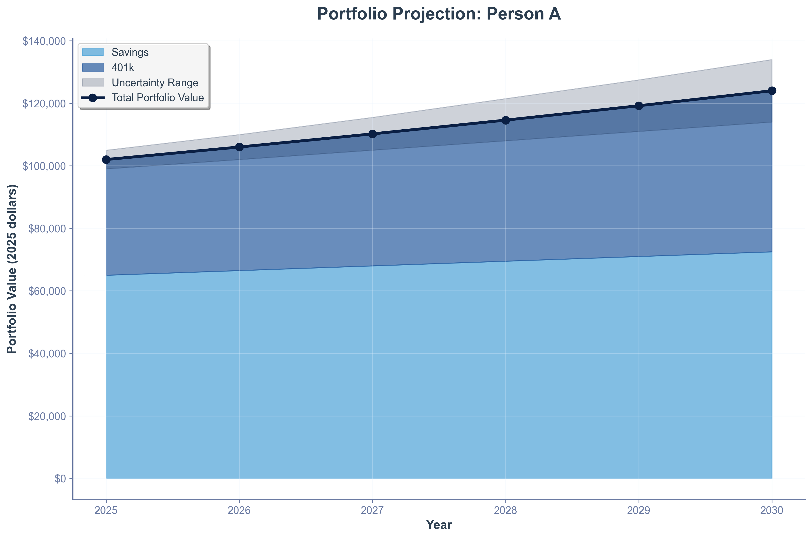

Economy & Policy
Understanding the Economic Cycle
The global economy has oscillated between crisis and exuberance over the past few years. The S&P 500 plunged roughly 34% during the March 2020 crash but recovered by August 2020 amid massive stimulus and renewed optimism (S&P Dow Jones Indices). Since then technology and AI enthusiasm have propelled the index to record highs. In contrast, Bitcoin surged 416% in 2020, peaked near $69k in late 2021, crashed below $20k in 2022 and rebounded above $100k by May 2025 (CoinMarketCap). Ether climbed from $186 to over $4.8k during 2020–21 before stabilising near $3.8k in mid‑2025.
Defensive sectors like consumer staples (XLP) fell much less than cyclicals during the pandemic, illustrating how some industries act as safe havens. Looking ahead, U.S. residential real estate is projected to grow about 3.3% annually, inflation is likely to remain above 3% into 2026 and the Federal Reserve is expected to cut rates gradually toward ~3.25%.
S&P 500 and Bitcoin prices (2020-2025)
Policy & Regulation
Policy actions have increasingly shaped markets. In March 2025 the United States established a Strategic Bitcoin Reserve, retaining seized BTC as a national reserve asset. During "Crypto Week" in July 2025 Congress passed the GENIUS Act, requiring 100% reserves for stable‑coins, and debated the CLARITY Act to provide regulatory certainty. The Anti‑CBDC Act seeks to block a U.S. digital currency, while the AI Action Plan outlines more than 90 policy actions to accelerate innovation, build infrastructure and sustain global leadership.
Other measures include the OBBBA housing & AI bill, which expands housing tax credits and mandates domestic AI supply chains, and reciprocal tariffs that raise import duties to 25–36%, potentially increasing inflation. Taken together, these policies aim to balance growth, innovation and national security.
Portfolio & Simulations
Investors face a complex landscape. Combining equities, high‑yield cash, real estate, AI/tech and crypto can help diversify risk and capture growth. Suggested allocations from our analysis include roughly 30–40% diversified equities/401(k), 15–25% high‑yield cash, 10–20% real estate, 15–25% AI/tech and 5–10% crypto. Real wealth trajectories vary depending on asset mix, risk tolerance and discipline.
Interactive charts comparing the S&P 500, Bitcoin, Ether and XLP will be available here. They will draw data directly from a stock‑fetching agent (see below) and illustrate how assets respond to policy changes, inflation and technological booms. Simulations will show hypothetical wealth outcomes for different portfolios through 2030.
Strategic Recommendations
Patterns emerge across these themes: stock and crypto rallies often coincide when liquidity is abundant, emphasising the importance of diversification and risk management. Government adoption of BTC legitimises digital assets but centralisation raises concerns about manipulation. High inflation argues for exposure to real assets and high‑yield savings to preserve purchasing power. Policies like the AI Action Plan and OBBBA bill point to opportunities in semiconductors, cloud and robotics.
These recommendations are not financial advice but provide a framework for discussion. Reassess regularly as technology, policy and markets evolve.
Bitcoin Billionaires & Major Holders
Bitcoin ownership is highly concentrated among governments, corporations and a handful of wealthy individuals. According to a May 2025 Coindoo analysis, MicroStrategy founder Michael Saylor has led his company to amass about 190,000 BTC. Other prominent holders include the Winklevoss twins with 150,000 BTC, Elon Musk/Tesla & X with 43,000 BTC, venture capitalist Tim Draper with 120,000 BTC, Digital Currency Group CEO Barry Silbert with 78,000 BTC, Binance founder Changpeng "CZ" Zhao with 70,000 BTC and Coinbase CEO Brian Armstrong with 60,000 BTC. Collectively, the top 20 holders control around 2 million BTC - about 10% of the total supply. Such concentration raises questions about decentralisation and market influence.
The U.S. government holds more than 207,000 BTC - mostly seized from criminal cases - and has earmarked these assets for a Strategic Bitcoin Reserve. Federal policy moves, including the GENIUS Act and Strategic Reserve, suggest an emerging public‑sector role in crypto markets.
Source: Coindoo – Top Bitcoin Billionaires and Millionaires of 2025
Recent Big Buyers (2023–2025)
In addition to long‑time holders, a number of wealthy individuals and companies have dramatically increased their Bitcoin exposure over the past few years. These moves illustrate growing institutional adoption and can signal long‑term confidence in digital assets.
-
Metaplanet Inc. – On 28 July 2025, the Tokyo‑listed investment firm added 780 BTC at an average price of $118,622 per coin, bringing its total holdings to 17,132 BTC worth roughly $1.73 billion. CEO Simon Gerovich said the company's BTC yield has surged nearly 450% year‑to‑date. Metaplanet is now Asia's largest public Bitcoin holder, positioning itself as a regional rival to Michael Saylor's Strategy reserve.
-
Ricardo Salinas Pliego – Mexico's third‑richest person increased his Bitcoin allocation from 10% of his portfolio in 2020 to 70% by March 2025. Salinas views Bitcoin as a digital store of value superior to traditional assets and has signalled his intention to reduce exposure to conventional stocks. His reallocation underscores the growing popularity of Bitcoin among ultra‑high‑net‑worth individuals in Latin America.
-
Other entrants – Hedge funds, family offices and corporations continue to accumulate BTC. Recent examples include Metaplanet's Japanese peers and a wave of North American mining companies converting profits into Bitcoin holdings. Tracking these moves helps gauge institutional appetite for crypto.
These recent purchases complement the longer‑standing positions held by the billionaires listed above and highlight shifting sentiment among global elites.
Portfolio Projections: Persons A, B & C
The Economic Trends slide deck illustrates how different asset mixes lead to varying long‑term wealth outcomes. Three hypothetical investors are compared:
- Person A allocates most of their funds to savings and a 401(k) plan. This conservative strategy offers low volatility and steady growth but limited upside.
- Person B diversifies across technology stocks, real estate, and savings/401(k). Their portfolio enjoys higher growth potential from tech and property exposure with moderate risk.
- Person C embraces risk, combining crypto, tech equities, high‑yield savings, a personal residence and a 401(k). While this mix can deliver the highest returns, it also exhibits greater variability and drawdowns.
Simulations show that by 2030, Person C's crypto‑heavy portfolio could deliver the largest real wealth but with significant volatility. Person B achieves balanced growth, while Person A preserves capital but may lag inflation. These scenarios highlight how asset allocation decisions drive outcomes and underscore the benefits of diversification.
Portfolio Analysis Tabs
 Person A's portfolio composed of savings and 401(k) contributions shows modest growth with narrow uncertainty bands. Source: Economic Trends deck.
For detailed sources and research citations, see our References page